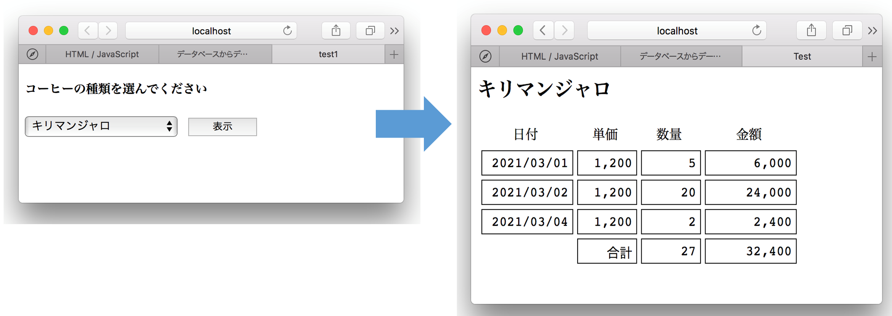
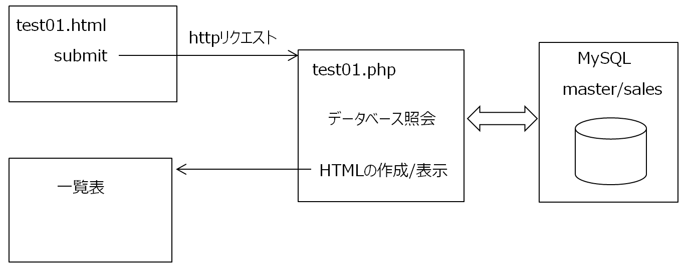

データベースからデータを取得しブラウザに表示する
PHPで実装する
データベースからデータを取得しブラウザに表示するという基本的な処理をPHPスクリプトを使って実装する。

画像をクリクすると実際に動作するページが表示されます
処理の流れ
1. クライアントHTMLは、submitによりPHPを起動する。必要ならパラメータを送る。
2. PHPはデータベースの照会を行い、出力用HTMLを作成しブラウザに表示する。

ソースコード
クライアントHTML
test01.html
サーバPHP
test01.php
CSS
test01.css